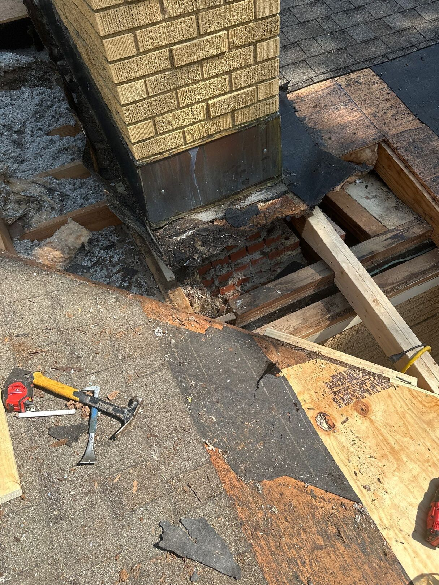
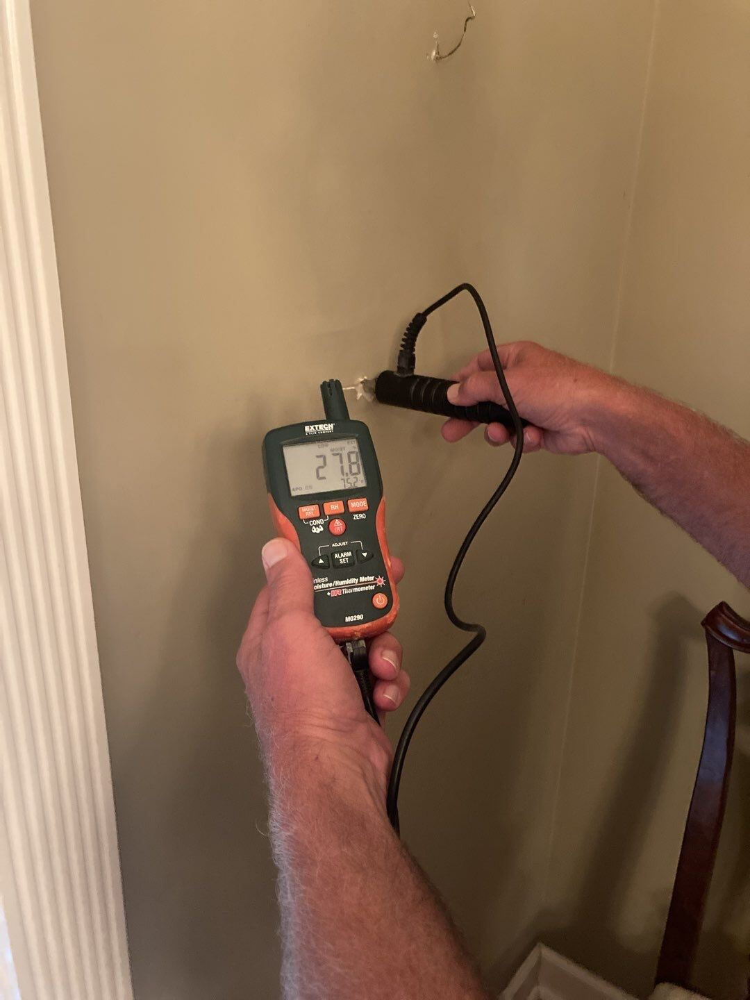
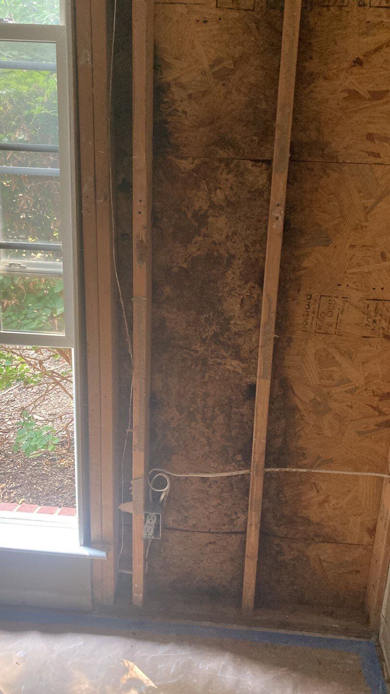
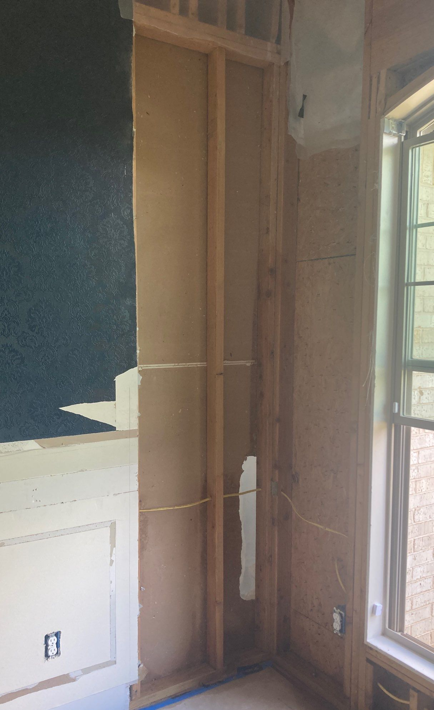
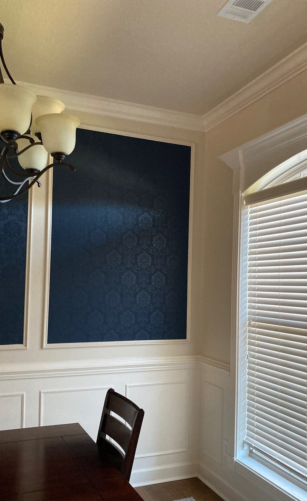

The Property Problem Report
Why Is There a Water Stain on My Ceiling?
Use the stain location, timing, nearby rooms, weather, plumbing, and HVAC operation to guide the search before repairing the ceiling.
Roof leak repair services and interior restoration services in Jonesboro, AR and surrounding Northeast Arkansas communities fix leaking roofs and the water damage inside homes and businesses. Crain Bros Inc repairs the roof leak and restores the attic, ceilings, and walls the water damaged. Crain Bros Inc is family owned and operated since 1984.

Emergency roof leak services protect homes and businesses while the leak source is found and repaired. Crain Bros Inc installs temporary roof protection when an opening lets rain into the building. The temporary covering limits more water entry while the roof and attic are inspected. Our emergency response services connect roof protection with the inspection and drying that follow.
Roof leak detection finds the leak source behind the ceiling stain or wet wall. Crain Bros Inc reads moisture in ceilings, walls, and attic materials with leak detection readings. The readings show how far the water spread inside the wall cavity. Our guide, Why Is There a Water Stain on My Ceiling?, explains why the stain location guides the search before repairs begin.


Roof leak repairs correct the failed detail that let water into the roof assembly. Crain Bros Inc repairs flashing at chimneys, vents, skylights, valleys, and roof-to-wall intersections. The repair opens the roofing around the failed transition and rebuilds the flashing interface. Our roofing services carry the repair through the roof covering, and masonry services join the work when the chimney itself needs repair.
Roof decking repair services replace roof decking damaged by roof leak water. Crain Bros Inc inspects rafters, trusses, and attic framing the leak damaged. Damaged structural material comes out before new roof covering conceals it. Our framing repair services restore the support under the repaired roof assembly.
Ice dam leak repairs correct the roof edge condition that held meltwater under the shingles. Crain Bros Inc checks attic insulation and ventilation with the roof edge repair. Wet insulation comes out of the attic and wall cavities the water damaged. Our insulation services replace the removed insulation after drying, and the U.S. Department of Energy Guide to Durable Attics connects ice dams with roof leaks and attic moisture.
Cleaning after a roof leak follows removal of materials that cannot be restored. Crain Bros Inc cleans the remaining framing, sheathing, and surfaces the roof leak water damaged. The work area gets cleaned before drying begins. Personal property in wet rooms moves to dry space through our personal property and contents care services.
Drying after a roof leak removes moisture from attic framing, insulation cavities, ceilings, and walls. Crain Bros Inc dries the materials the water damaged and verifies the readings. Drying access opens the cavities that hold hidden moisture. Our water damage restoration services carry the drying through verified readings before repairs close the assemblies.
Interior restoration after a roof leak rebuilds the ceilings, walls, and trim the water damaged. Crain Bros Inc repairs the roof source first and restores the rooms after drying verifies dry conditions. Our drywall repair services replace removed drywall and finish the surface. Painting services complete the restored rooms.


Roof leak documentation records the entry point, the water path, and the completed repairs. Crain Bros Inc documents visible damage, moisture readings, removed materials, and restored conditions. We work on properties involved in insurance claims. The property owner receives the project record.
Crain Bros Inc serves Jonesboro, Paragould, Blytheville, Trumann, Newport, Brookland, Bono, Bay, Lake City, Monette, Caraway, Harrisburg, Gosnell, and Walnut Ridge.
The Property Problem Report
Use the stain location, timing, nearby rooms, weather, plumbing, and HVAC operation to guide the search before repairing the ceiling.
Property Owners Maintenance Plan
Review attic and exterior clues connected to roof coverings, flashing, ventilation, drainage, and water entry.
Property Owners Maintenance Plan
Learn where leaks commonly begin, what warning signs to watch for, and how early action can help limit water damage.
Guidance connecting roof leaks, flashing, ice dams, wet insulation, attic moisture, and ventilation.
Research guidance on roof coverings, decking, underlayment, edges, and roof system performance.
Guidance on roof strengthening, property documentation, and severe wind protection.
Homeowner guidance on correcting water problems, drying affected materials, and checking for hidden moisture.
Guidance on drying water-damaged areas within 24 to 48 hours and on protection controls for contaminated water.
Safety guidance for protective equipment and hazards associated with floodwater and sewage.
Related services carry a roof leak job from the failed roof detail through cleaning, drying, and repairs to the finished rooms.
Emergency response after a roof leak protects the opening from more rain. The first visit sets up the inspection that follows.
The inspection reads the roof, the attic, and the rooms the leak water damaged. What it finds sets the repair scope, the cleaning plan, and the drying plan.
Leak detection after a roof leak reads moisture in ceilings, walls, and attic materials. Those readings draw the map of where the roof leak water went.
Roofing services after a roof leak repair the failed flashing, covering, and decking at the entry point. Interior work follows once the roof holds water out.
Water damage restoration after a roof leak carries the whole job from the leaking roof through cleaning and drying to the finished rooms. One job handles the source, the cleaning, the drying, and the repairs.
Property and building restoration after a roof leak brings the roof repairs, the structural repairs, and the finish repairs together. The repair runs as one coordinated job.
Mold damage restoration after a roof leak starts with prevention through cleaning, drying access, and verified drying. Inspection decides whether mold cleanup is needed.
Masonry services after a roof leak repair deteriorated chimney brick and mortar at the flashing transition. The masonry repair joins the flashing repair at the chimney.
Framing repair after a roof leak follows inspection of rafters, decking support, and wall studs. Finish work waits until readings verify the structure is dry.
Insulation services after a roof leak replace wet insulation in the attic and wall cavities. The cavity gets new insulation after drying.
Drywall repair services after a roof leak cover opened ceilings, wet walls, and access openings. The drywall goes back up once the framing is dry.
Flooring installation and repair after a roof leak fixes flooring the leak water damaged below ceilings and walls. The new flooring goes in once the subfloor is repaired and dry.
Siding services after a roof leak repair siding and sheathing at roof-to-wall transitions. The siding repair closes the wall assembly after the leak source is corrected.
Trim carpentry after a roof leak replaces baseboards and trim along wet walls. New trim finishes the rooms after walls and floors are repaired.
Painting services after a roof leak cover repaired ceilings, walls, and trim once the drywall underneath is ready. Fresh paint finishes the rooms after wall repairs are done.
Electrical services after a roof leak check outlets, lighting, and wiring near wet ceilings and walls for water exposure. The evaluation comes before the rooms go back into use.
Personal property and contents care after a roof leak moves belongings from wet rooms to dry space. Contents decisions get recorded while the structure dries.
Move belongings away from the drip. Keep people away from wet ceilings and outlets. Take photos of visible damage. Call for roof protection and inspection of the leak path.
A ceiling stain does not always sit under the roof opening. Water travels along decking, framing, and ceiling joints before it shows. Moisture readings and attic inspection find the failed detail.
Materials that cannot be cleaned come out first. Remaining framing and sheathing get cleaned. The work area gets cleaned too. Personal property in wet rooms moves to dry space. The inspection findings set what gets cleaned.
Drying time depends on how much material got wet. Airflow, dehumidification, and hidden moisture affect the schedule. Moisture readings verify when drying is complete.
Yes. The failed roof detail is repaired first. Cleaning and drying follow the repair. Ceilings, walls, and trim are restored after readings verify dry conditions.
Yes. Photos, moisture readings, the approved scope, progress records, and completed repairs are documented. The property owner receives the record.